| 日付 | 2014年6月1日（日） |
|---|---|
| 山域 | 浅間周辺 |
| メンバー | 家族（妻、長女・3歳、長男・0歳） |
| 山行形態 | 子連れ日帰り |
| アクセス | 車 |
| ルート (Map) | 浅間越 (8:33) - (9:16) 馬返し - (9:37) 小浅間山東峰 - (9:53) 小浅間山西峰 (10:49) - (10:58) 馬返し - (11:27) 浅間越 |
久々に西上州の山に登ろうと計画を立てていたが、
連日30℃越えで、この暑さの中登ると死んでしまいそうだ。
急遽予定を変更し、避暑地として有名な軽井沢の近くにある
小浅間山に行くことにする。
浅間山の近くにある小さな山で、浅間山の展望台だ。
まだ本格的な夏ではないため、さほど軽井沢は混雑していない。
小さな駐車場に無事、車を停める。標高1400m。
浅間山の噴火に関する注意書きが記載されている。
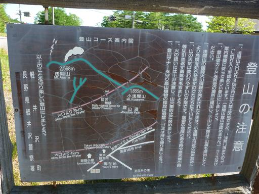
目の前に見える小さな丘が目指す小浅間山。
今日も歩行時間の短い楽勝登山だ。
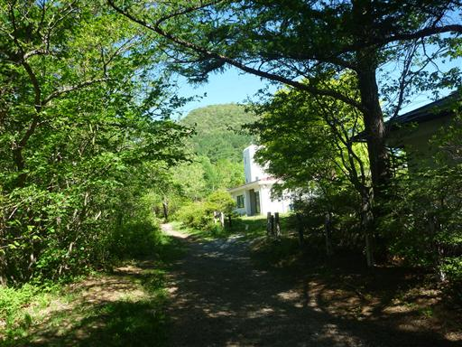
美しい森の中を歩いていく。もうセミの声が聞こえる。
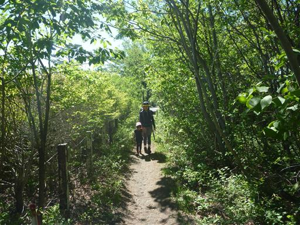
足元に咲くツマトリソウ。
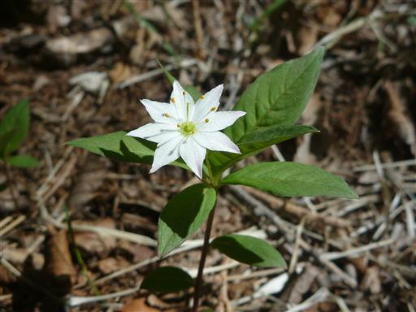
樹林帯を30分ほど歩くと、周囲が少し開けてくる。
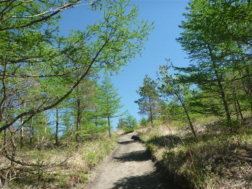
浅間山と小浅間山の鞍部に到着。目の前の小高い丘が小浅間山だ。
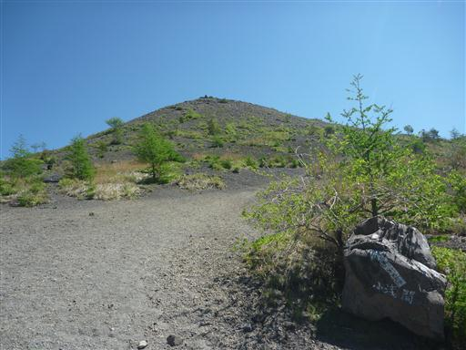
浅間山方面は美しい新緑に覆われている。
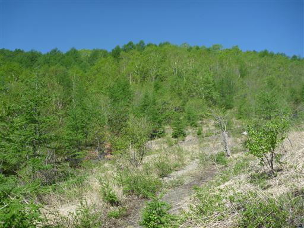
立入禁止の標識。噴火活動は最近小康状態だが、それでもこちらの登山道は閉鎖されている。
浅間山への登山は西側がメインルートだ。
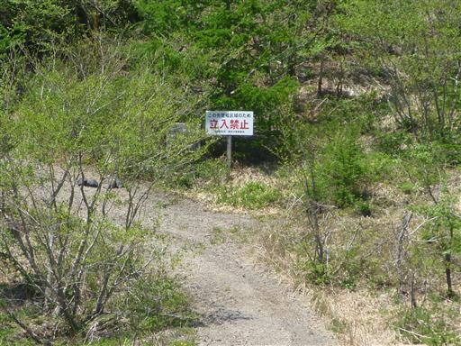
ここからは木のない砂利道を登っていく。
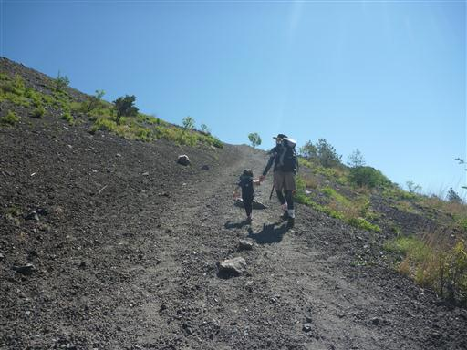
南の方の展望は霞んでいて、低い山々がぼんやりと見えている。
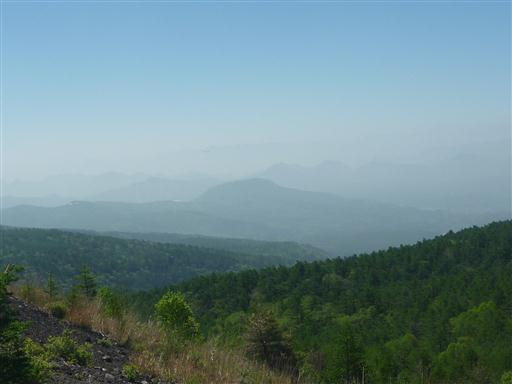
標高を上げていくと、少しずつ浅間山の姿が見えてくる。
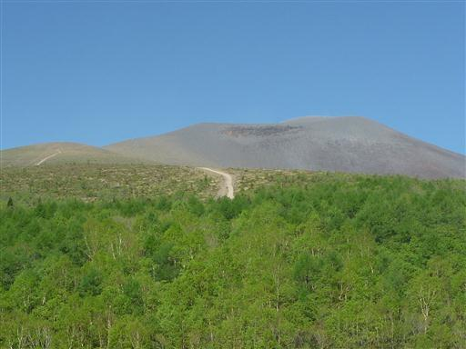
目の前に見える丸い頭が小浅間山山頂だ。
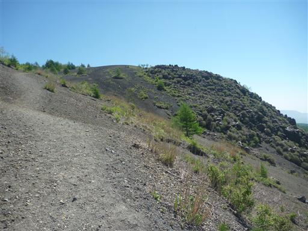
振り返ると浅間山が大きい。一筋の登山道が伸びているのがよく見える。
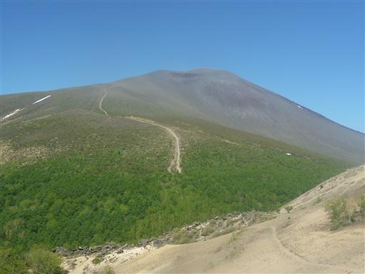
道が細いため、滑りやすい砂の斜面は歩きにくい。
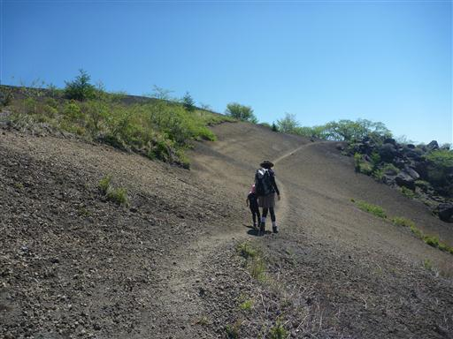
小浅間山山頂到着。標高1655m。
広大な山頂で浅間山の展望が良い。
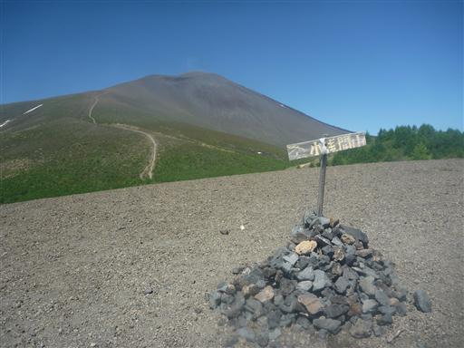
広大な浅間山の裾野。背後に見えるのは鼻曲山だ。
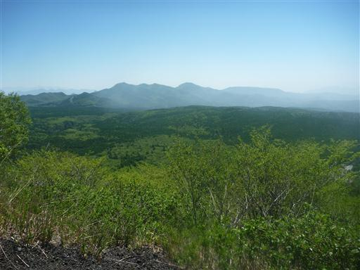
そして、こちらは浅間隠山。何れも過去に登ったことのある山だ。
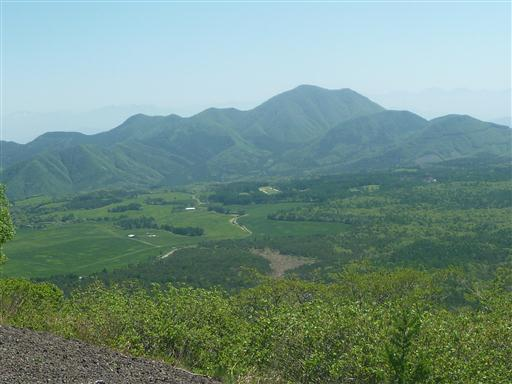
小浅間山は東峰と西峰に分かれていて、主峰は先ほどの東峰だ。
まだ昼食には早いため、西峰に向かうことにする。
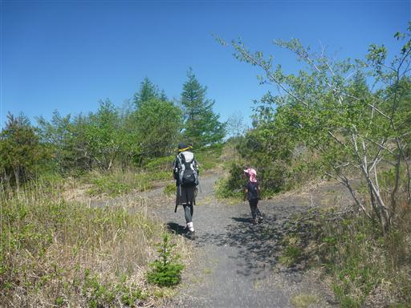
東峰・西峰間は樹林帯に覆われ、踏み跡が非常に少ない。
山頂部をぐるりと一周できるようになっているが、
分岐点まで引き返して西峰に登る方が一般的かもしれない。
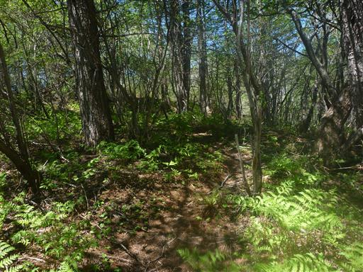
樹林帯がなくなり、一気に視界が開ける。西峰の山頂だ。
ここからも正面に浅間山が望める。
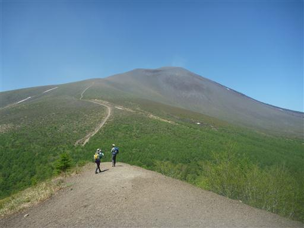
こちらの山頂からは北側の展望が広がる。
四阿山、草津白根山、岩菅山などの名峰がズラリと並んでいるが、
ここからみると、あまり特徴がない山々で目を引かない。
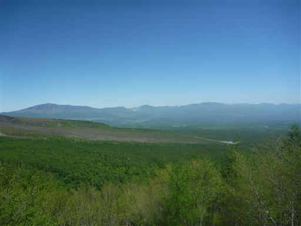
浅間山の鬼押出し。浅間山から流れた溶岩だ。
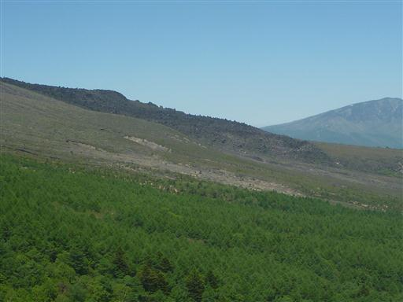
山頂に腰かけて昼食タイムにする。
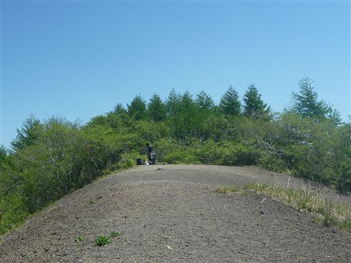
西峰からの下山道は砂が堆積した急斜面だ。
娘は八海山で雪面を滑って下ったのが楽しかったようで、
ここでも同じようにして滑って下っている。
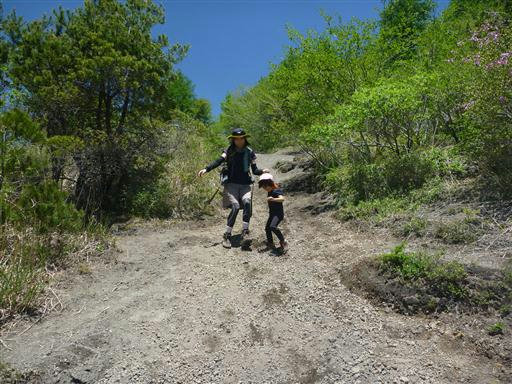
東峰との分岐点まで戻ったら、元来た道を下って行く。
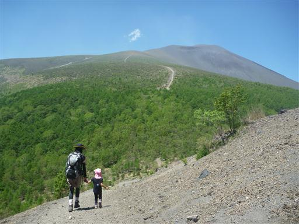
あとは美しい樹林帯の遊歩道を歩いて駐車場をめざす。所々で観光客とすれ違う。
比較的マイナーな山かと思っていたが、本か雑誌で紹介されているのだろうか？
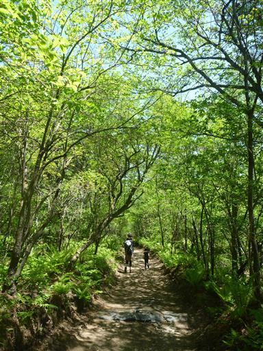
曲がったダケカンバ。冬は雪が深そうだ。
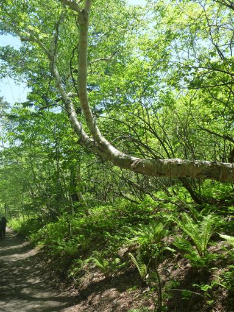
下山後は時間が余ったため、鬼押出し園に寄り道する。
溶岩地帯を整備した観光地だ。
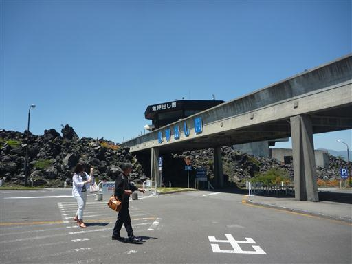
駐車場からは浅間山が大きく見える。
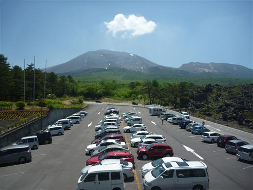
今の時期はツツジが旬。多くのツツジが見られる。
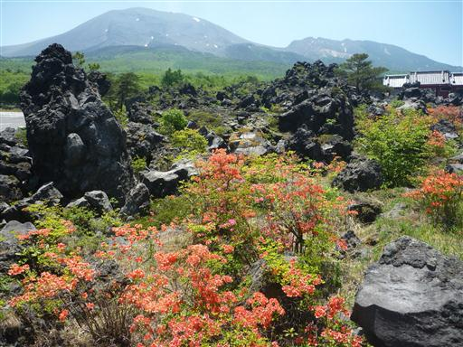
少し昭和の雰囲気を感じる観光地。人影は比較的少ない。
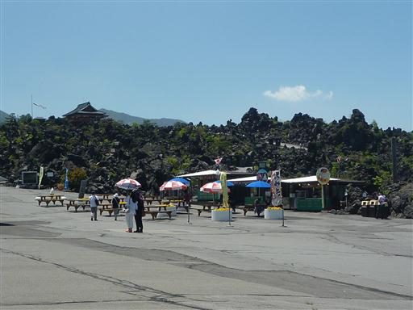
遊歩道がたくさん整備されている。
大回りコースの１時間コースを歩いてみる。
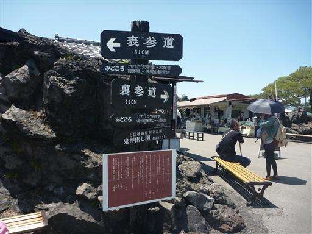
惣門を潜る。自然を売りにした観光地なのに、何故このようなものを建てるのだろう？
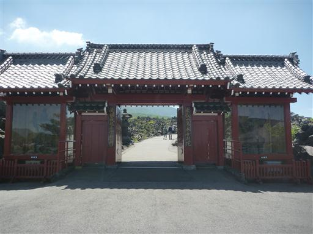
遊歩道はきれいに整備されている。
危険なので溶岩には登らないようにとの注意書きがある。
岩の上をピョンピョン飛び移るのが楽しいのだが…
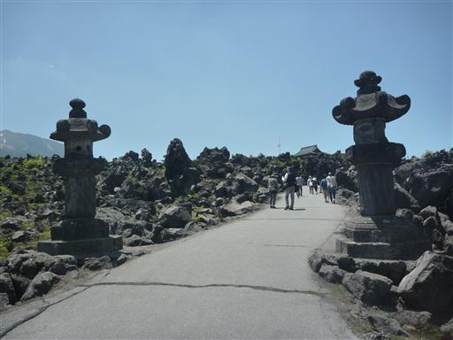
周囲に広がる溶岩地帯。突き立った岩など、独特の景観が広がる。
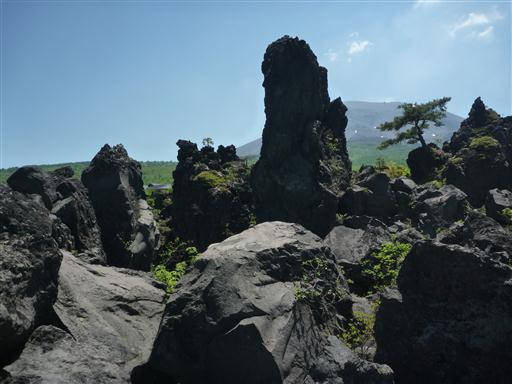
ウラジロヨウラク。花期はもう少し先だ。
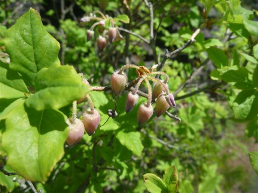
浅間山の姿はどこからでも良く見える。
あんな遠くからここまで溶岩が達したとは、ものすごい噴火だったのだろう。
ここの溶岩は1783年の大噴火の際にできたものだ。
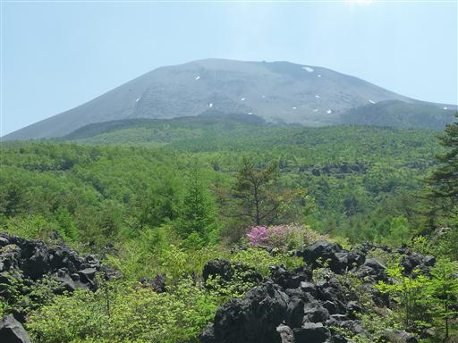
所々に休憩所がある。日影になっていて涼しい。
噴火時のシェルターのような形をしているが、単なる休憩所のようだ。
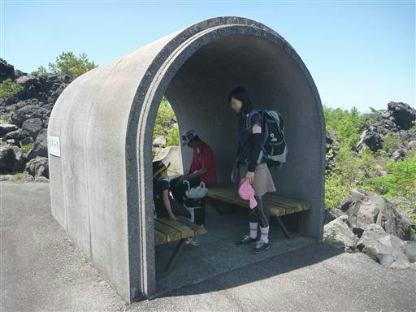
奥の方まで歩いていくと人影は少なくなる。
どこまで歩いてもきれいに整備された遊歩道で、少々つまらない。
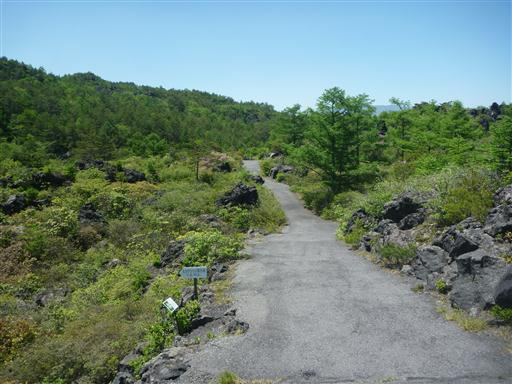
ツガザクラ。小さくて可愛らしい花だ。
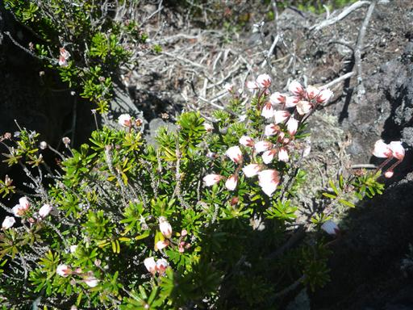
ツツジの花もたくさん咲いている。
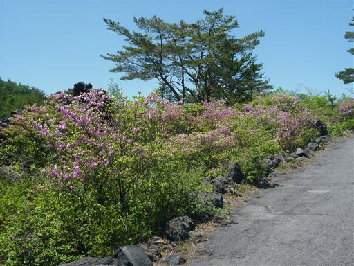
山を下山した後の1時間コースはさすがに疲れたらしく、娘がグズグズ言い始める。
ちょうど売店があったため、ここで初のかき氷を試してみる。
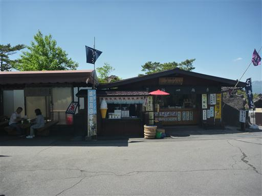
味はイチゴ味。結構気に入ったようだ。

売店近くにある鐘楼。

「静かにお突きください」の注意書きがある。
鐘は大きく鳴らすものだと思っていたが…
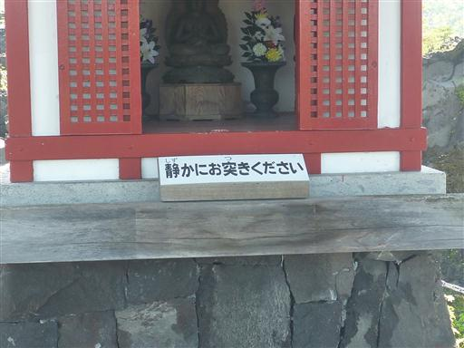
かき氷を食べたら残りの行程を歩いて駐車場に向かう。
浅間山を堪能できた1日だった。